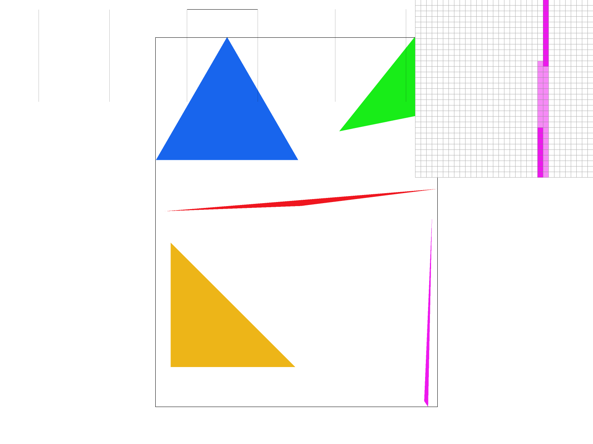
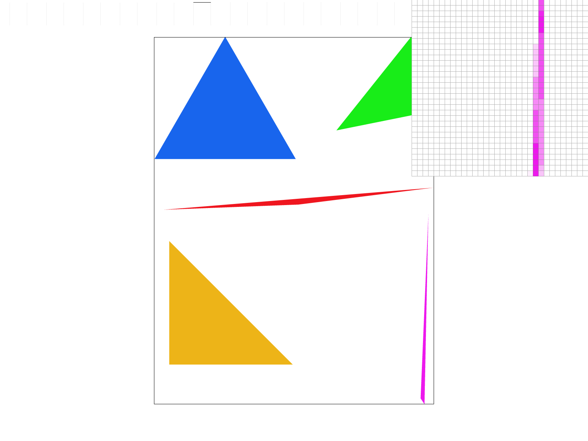
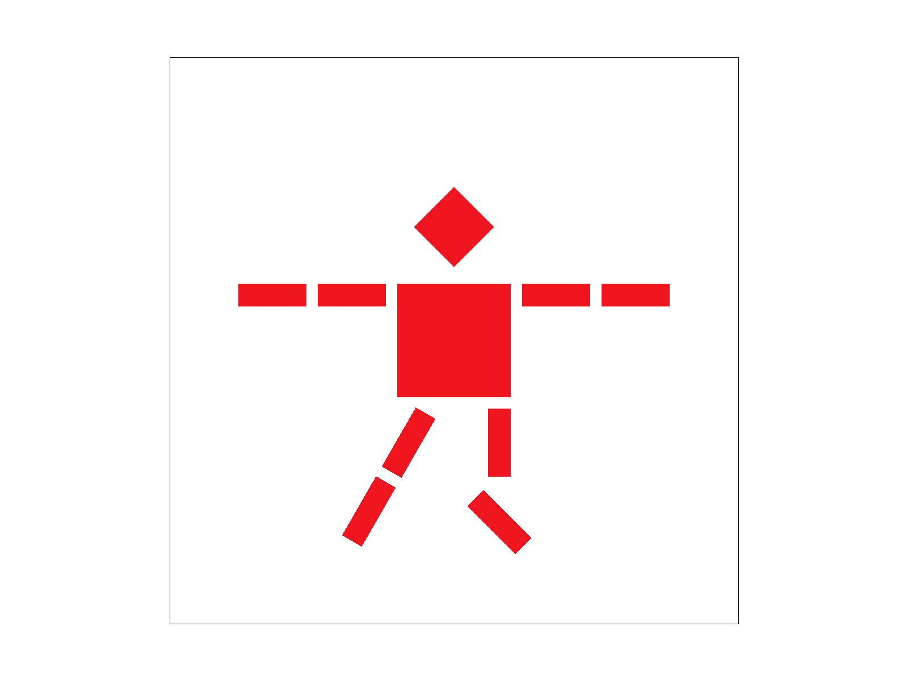
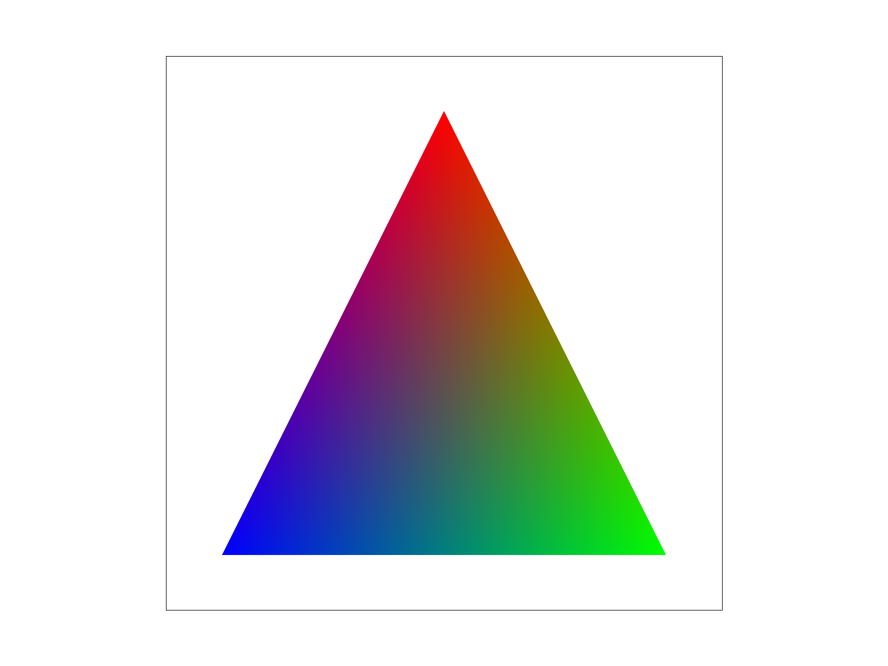
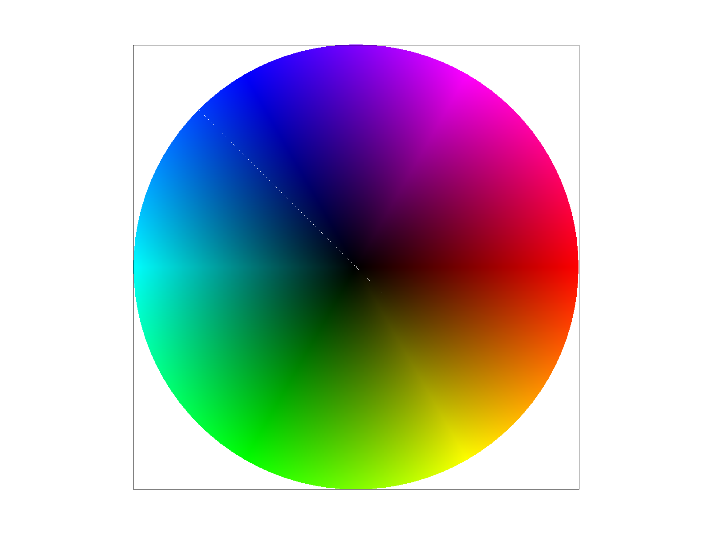

The high level overview is I built that part of a video game's graphics options menu that allows me to "improve" the graphical rendering.
What was interesting was getting into the low level code details and math of how these graphics modification options in those video game menus, work.
Though I have had a general idea of how it works having done game dev, particularly VR work in Unity, I have never really had to implement them til now.
It reminds me of when I had to write out how a linked list works in c++ by hand (like paper to pencil), including the memory management.
It is also always fun to see the application of different algorithims for new specific different types of problems (so in this case, for graphics rendering).
Task 1: Drawing Single-Color Triangles
I get 3 vertices of a triangle.
I take the minimum and maximum of the x coordinates and y coodinates to get the horizontal and vertical extents, respectively.
I floor the minimums and ceiling the maximums so that the box is expressed as an integer pixel coordinate.
I then clamp this to the framebuffer's dimensions, as to prevent any writing outside of the constraints.
Within every pixel in this bounding box, I take a sample point at the center of the pixel, and run a point in triangle test using the edge functions.
For each of the triangle's edges, the edge functions tells me what side of the line the sample point falls on.
One side is positive, the other is negative and zero if it is directly on the line. A point is inside a trinagle then when it is on the same side of all three of the edges,
as in all not negative or all not positive. We use the equals or for evaluation so that if a sample sits on an edge, it will still count as inside.
This means edges are filled rather than unfilled just in case. Any sample that successfully passes this test gets colored in by the fill_pixel algorithm.
Why it is no worse than checking every sample in the bounding box:
What we are comparing against is to "iterate overy every pixel in the bounding box and to do a constant runtime check on whether it is inside or outside"
This algorithm does essentially the same. The two outer loops go over (x_min, x_max) * (y_min, y_max) which is the bounding box. The inner loop goes over the sample rate, which is linear.
Then the edge function checks are O(1). This gives us n * O(1) = O(n). So this algorithm is O(n) where n is the number of pixels in the bounding box, which is no worse than checking every sample in the bounding box.
Task 2: Antialiasing by Supersampling
Super sampling algorithm.
Data Structure:
The data structures were determined already in rasterizer.h
I use sample_buffer, a vector of color, of size width * height * sample rate.
It behaves as a temporary frame buffer. Each pixel, a (x,y) coordinate, has a block of sample_rateColor entries, beginning at (width * y + x) * sample_rate.
Every subsample of that pixel (s) is at base + s. Having each pixel's sample adjacent in memory optimizes the downsampling at the end to be very quick.
Modifications to rasterization pipeline:
In rasterize_triangle, i check the triangle's bounding box, and loop over the pixels in it.
Within each pixel i do a square root of the sample rate times itself, creating a grid of sample points.
Each higher sampling rate increases the number of sub cells. Each sample point within is tested independently against the three edge functions (both orders forward and backwards depending on which starting vertex)
If a sample is inside the range, the triangle's color is written into the sample slot. If it is not, the sample is left alone so if qualified to be filled in by an earlier call, it retains the color that was placed in it then.
Then the resolve_to_framebuffer takes an average of each pixel's sample_rate samples and then converts to a float which goes into rgb_framebuffer_target (8 bit description of a color).
Supersampling Usefulness:
Rendeirng an image is an attempt to decieve us into thinking than image is a whole, when in fact it is made up of many discrete pixels. The more pixels we have, the more accurately we can represent the image. However, there are limits to how many pixels we can have, and so we must make do with a limited number of pixels.
When we have a limited number of pixels, we can use supersampling to increase the "effective number of pixels". Supersampling works by rendering the image at a higher resolution than the final output resolution, and then downsampling the image to the final output resolution. This allows us to capture more detail in the image, and reduces aliasing artifacts.
Supersampling anti aliases my triangles by:
At the edge of a rendered triangle, a pixel is only partially covered by the vertices that describe the triangles that make up the triangle image.
If we decide to only show a pixel or not, as there are less pixels describing a part of the triangle (so particularly at the edges), the more aliased it will be.
When we super sample, we are effectively increasing the number of pixels that describe the triangle, and so we can more accurately determine how much of a pixel is covered by the triangle.
Then pixels around the originally color sampled pixels can be color adjusted to various degrees of that triangle's color and white. When zoomed out, this makes the triangle edges seem smother.
super sample rate 1

super sample rate 4

super sample rate 16
You can see here that with higher super sampling, the edges of the pink purple triangle become smoother and less jagged.
Without super sampling, each pixel is either on or off, and in cases like the tip of this triangle where there are fewer colored pixels
together, compared to the white area around it, the triangle will look jagged. This is aliasing. As the super sampling goes higher,
the edges of the triangle become smoother and less jagged, as the color of the triangle is more accurately represented (by each pixel being sampled at first 4 times, and then 16 times) in the final downsampled image.
Task 3: Transforms
My cubeman is doing a dance known as the "stanky leg" where one whole leg is rotating into a circular motion while the other is bent slightly in order to support this.

He doing the stanky leg dance
Task 4: Barycentric coordinates

Barycentric triangle
It follows the assignment suggestion to create a triangle, with one vertex red, one vertex green, and one vertex blue. The colors are blended together in the interior of the triangle using barycentric coordinates.
Barycentric coordinates are a way of describing any point relative to a triangle as a weighted mix of its three vertices, instead of a 2 coordinate x,y position. A triangle with 3 vertices, A, B, and C, can have a point P in relation to it.
For a triangle with vertices A, B, and C, any point P in the plane can be written as:
P = α·A + β·B + γ·C
where α, β, γ are the barycentric coordinates. The value of these coordinates always add up to 1. Each weight tells you how much influence that vertex has on the point. The closer it is to 1, the closer it is to that vertex point. At the center of an equilateral triangle, each barycentric coordinate would be 1/3 , as they would all have equal pull. If a coordinate is in the negative, that means it is outside the triangle, on the opposite side of that particular vertex.
>
In the rasterizer, I use barycentric coordinates two ways.
The first, is an inside/outside the triangle test: a sample point is inside the triangle exactly when all three weights are non-negative or all non-positive, depending on the winding order. Basically an edge function sign test.
Secondly if I can confirm a point is inside i then use the weights to interpolate per vertex data smoothly and consistently through the triangle, blending the vertex colors.

Barycentric blended circle
Task 5: "Pixel sampling" for texture mapping
Task 6: "Level Sampling" with mipmaps for texture mapping
(Optional) Task 7: Extra Credit - Draw Something Creative!
Additional Notes (please remove)
You can also add code if you'd like as so: code code code
If you'd like to add math equations,
You can write inline equations like so: \( a^2 + b^2 = c^2 \)
You can write display equations like so: \[ a^2 + b^2 = c^2 \]